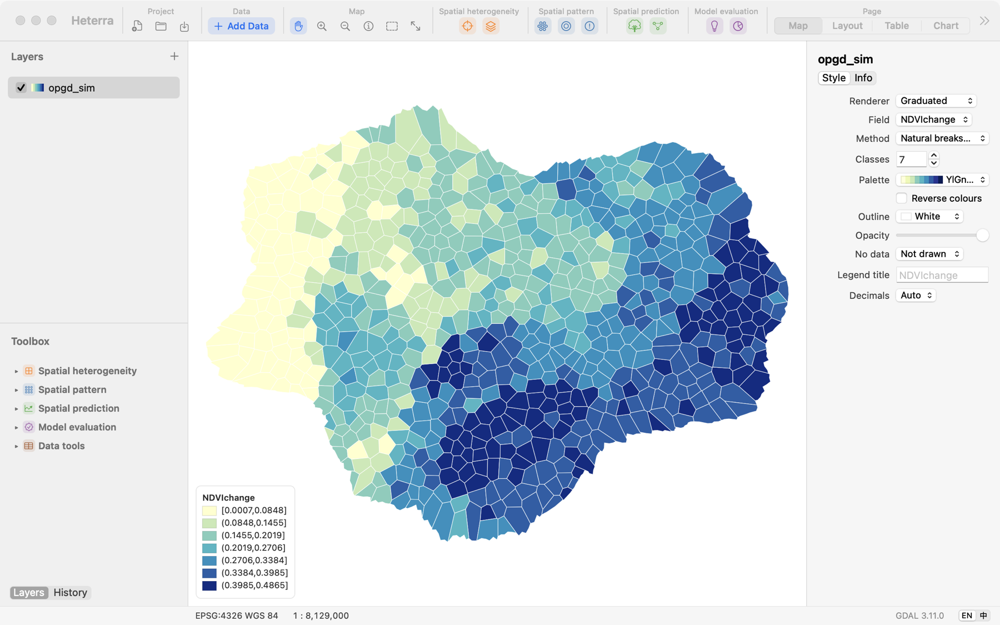
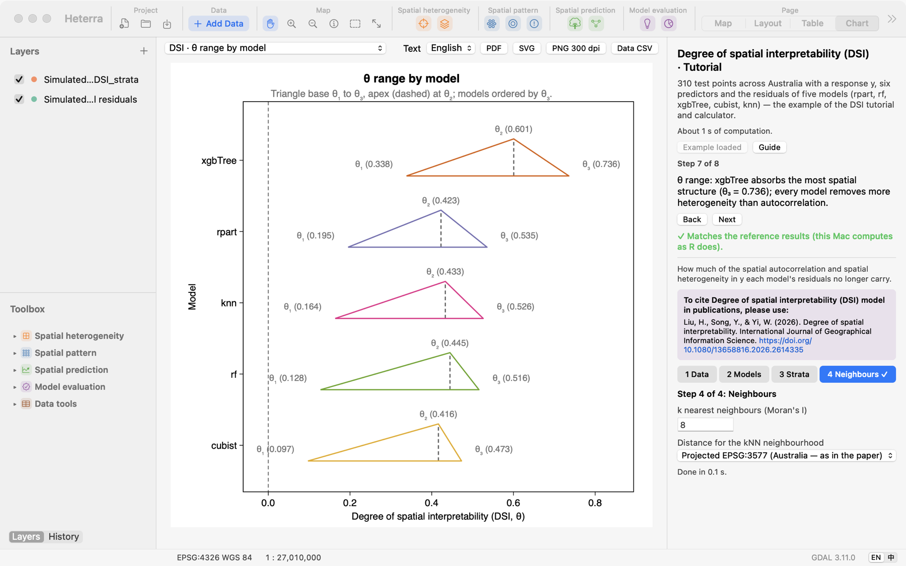

Heterra
Heterra
Advanced spatial analysis. One lightweight GIS app.
先进的空间分析,一个轻量的 GIS 应用。
Heterra is free, lightweight software for exploring spatial heterogeneity, uncovering patterns, building predictions, and evaluating models—with interactive maps, charts, and guided tutorials for every method.
Heterra 是免费、轻量的软件,用于探索空间异质性、发现空间模式、构建预测和评估模型,每个方法都配有交互式地图、统计图和引导式教程。
Download for Mac下载 Mac 版Apple silicon · macOS 13 or later · English and 中文
Apple 芯片 · macOS 13 或更高 · English 和中文

A native Mac app
原生 Mac 应用
Open shapefiles, GeoTIFF, GeoPackage, GeoJSON, CSV and File Geodatabase. Style and explore layers, then run a method in the same window, with no R or Python to install.
可打开 Shapefile、GeoTIFF、GeoPackage、GeoJSON、CSV 和 File Geodatabase。在同一个窗口里设置符号、查看图层、运行方法,不用安装 R 或 Python。
Results checked against R
结果与 R 核对
Each method is tested against its R reference implementation. Every tutorial compares its results with the reference on your own Mac, and every run can be exported as an R script.
每个方法都与其 R 参考实现对照测试。教程会在你自己的 Mac 上把结果与参考结果比较,每次运行都可以导出为 R 脚本。
Figures ready for papers
可直接用于论文的图
Export charts and page layouts as vector PDF and SVG, or as PNG at print resolution, with colours from RColorBrewer. Keep the data behind each chart as CSV.
统计图和版面可导出为矢量 PDF、SVG,或印刷分辨率的 PNG,颜色来自 RColorBrewer。每张图背后的数据也可以导出为 CSV。
-
Set up in steps, run where it counts
分步设置,需要时才运行
Each tool walks through its settings one step at a time. Run appears only at the steps that compute something.
每个工具按步骤设置,只有需要计算的步骤才有运行按钮。
-
A tutorial in every tool
每个工具都有教程
Load an example, follow the steps and read the results, with a guide in English and Chinese.
载入案例,跟着步骤操作并解读结果,手册有中英文。
-
Charts linked to the map
统计图与地图联动
Where a chart lists a layer's categories, click one to select its features on the map.
统计图列出图层的类别时,点击一个类别就能在地图上选中对应要素。

Methods方法
Spatial heterogeneity空间异质性
Spatial pattern空间模式
Spatial prediction空间预测
Model evaluation模型评估
Data tools数据工具
CSV to points · Reproject · Raster to grid table · Join · Field calculator · Clip
CSV 转点 · 重投影 · 栅格转格网表 · 连接 · 字段计算 · 裁剪
Download下载
The first public release is being prepared.
第一个公开版本正在准备中。
- Requirements. A Mac with Apple silicon and macOS 13 or later.
- 系统要求。Apple 芯片的 Mac,macOS 13 或更高。
- Install. Open the .dmg and drag Heterra to Applications.
- 安装。打开 .dmg,把 Heterra 拖到"应用程序"。
- First launch. Heterra is not notarised by Apple, so macOS blocks it the first time. Open System Settings → Privacy & Security and choose Open Anyway.
- 第一次打开。Heterra 没有经过 Apple 公证,macOS 第一次会拦截。请打开"系统设置 → 隐私与安全性",选择"仍要打开"。
Cite引用
Song, Y. (2026) Heterra [software]. https://heterra.github.io
Please also cite the paper of each method you use, linked above. Heterra shows the full reference in every tool's panel.
也请引用你所用方法的论文(链接见上)。每个工具的面板里都有完整的文献信息。
Feedback反馈
If you have any suggestions, comments or questions, please email yongzesong.heterra@gmail.com.
如有任何建议、意见或问题,请发邮件到 yongzesong.heterra@gmail.com。